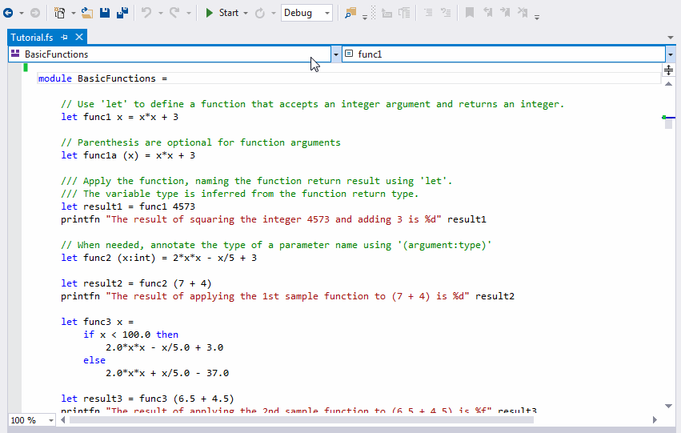

Navigation bar
NOTE: The feature is distributed as an experimental part of F# Tools in Visual Studio. The setting for this specific feature might be lost after updating/reinstalling Visual Studio.
Here is a demo screencast.

For more information about the feature, please read the following article.